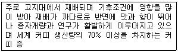
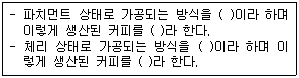
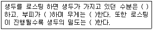
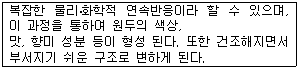
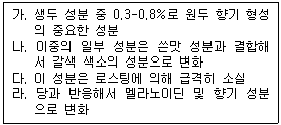
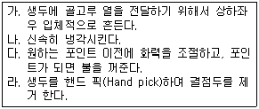
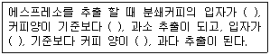
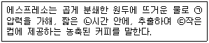

바리스타-2급 (2012-07-14 기출문제)
1과목: 커피학 개론
1. 다음 중 영국의 커피하우스에서 발전되어 오늘날 세계적인 기업으로 성장한 보험사는?
- 런던 보험회사
- 메릴린치 보험회사
- 푸르덴셜 보험회사
- 로이드 보험회사
(정답률: 65%)

2. 우리나라에서 처음 커피를 마신 사람은 고종(高宗) 이다. 고종은 덕수궁 내에 우리나라 최초의 로마네스크 양식 건물을 지어 커피와 다과를 즐겼다고 한다. 이곳은 어디인가?
- 밀다원(蜜茶苑)
- 카페 세실
- 정관헌(靜觀軒)
- 난다랑(蘭茶廊)
(정답률: 90%)
3. 다음의 커피체리에 관한 내용 중 틀린 것은?
- 성숙한 커피 열매는 색이나 형태가 체리와 비슷해서 ‘Cherry’, ‘Coffee cherry’ 라고 불린다.
- 일반적으로 체리의 껍질 안쪽에 과육이 있고, 과육 안쪽으로 속껍질 안에 두 개의 생두가 들어 있다.
- 커피 생두는 한 체리에 보통 두 개가 서로 마주보는 형태로 간혹 세 개 이상 들어있는 경우도 있다.
- 가지 끝에 열리는 체리에는 생두가 하나만 들어 있는 경우도 있는데, 이런 체리를 피베리(Peaberry)라 부른다.
(정답률: 62%)
4. 생두의 가운데 골처럼 파인 부분을 무엇이라 하는가?
- 센터 컷(Center cut)
- 외피(Outer skin)
- 파치먼트(Parchment)
- 과육(Pulp)
(정답률: 88%)
5. 다음 설명하는 커피의 종(Species)은 무엇인가?

- 아라비카 종
- 로부스타 종
- 리베리카 종
- 카네포라 종
(정답률: 87%)
6. 아라비카(Arabica) 종의 생육조건에 맞는 것은?
- 병충해에 강하며 환경 적응력이 좋다.
- 해발 800m 이하에서 재배해야 품질이 좋은 아라비카 종을 생산할 수 있다.
- 서리는 생육에 치명적이다.
- 연평균 기온 24-35℃의 온도가 유지되어야 무난히 경작 될 수 있다.
(정답률: 76%)
7. 원산지 에티오피아로부터 커피가 전파되어 최초로 경작을 시작한 나라는?
- 인도
- 인도네시아
- 예멘
- 브라질
(정답률: 72%)
8. 다음 커피나무에 관한 내용에 대한 설명 중 옳은 것은?
- 아라비카 종 커피는 일 년 내내 온도 차이가 크지 않은 고지대에 재배하기 때문에 꽃 피는 시기가 일정하다.
- 커피나무에 꽃이 피었다가 지고 체리가 맺히기 시작하면, 이로부터 6-8주 지나야 수확이 가능하다.
- 체리는 익어감에 따라 빨간색이나 노란색에서 초록색으로 변해 간다.
- 커피나무는 체리를 맺기 시작하면 5년 정도 지나야 수확이 안정되며, 경제성 있게 수확할 수 있는 기간은 20-30년이라고 보아야 된다.
(정답률: 81%)
9. 커피나무의 경작에 보편적으로 이용되고 있는 방법은?
- 직파(直播)
- 파치먼트 파종
- 접목(Grafting)
- 조직배양
(정답률: 79%)
10. 다음의 커피에 관한 여러 기술 중 틀리게 설명된 것은?
- 커피 가공과정 중 발생되는 부산물인 펄프(Pulp)는 퇴비로 재활용되기도 한다.
- 티피카(Typica), 카투아이(Catuai)는 아라비카 품종이다.
- 커피의 대표적인 종(Species)은 아라비카(Arabica), 카네포라(Canephora), 리베리카(Liberica) 이다.
- 커피 품종 중 켄트(Kent)종은 인도네시아의 고유 품종이다.
(정답률: 55%)
11. 다음 커피의 생육조건에 관한 내용 중 옳은 것은?
- 커피는 열대식물이므로 일조량이 많을수록 잘 자란다.
- 커피벨트내의 지역이 아니라면 커피를 재배하는 것은 불가능하다.
- 아라비카종과 로부스타종은 고도와 강수량 등 재배조건이 동일하다.
- 유기질이 풍부한 화산성 토양이 재배에 적합하다.
(정답률: 79%)
12. 다음의 커피 품종을 올바르게 짝지은 것은?
- 카투라(Caturra) - 아라비카와 로부스타의 교배종
- 문도 노보(Mundo Novo) - 버번(Bourbon)과 티피카(Typica)의 자연교배종
- 카티모르((Catimor) - 버번(Bourbon)의 돌연변이 품종
- 버번(Bourbon) - 아라비카 원종에 가장 가까운 품종
(정답률: 65%)
13. 다음 중 잘못 연결된 것은?
- 파티오(Patio) - 파치먼트 커피나 체리를 말리는 공간
- 너셔리(Nursery) - 묘목을 기르는 시설
- 펄프드 커피(Pulped coffee) - 펄핑 후 점액질이 제거된 상태의 파치먼트
- 스크린 사이즈(Screen size) - 커피의 크기를 구분하는 단위
(정답률: 53%)
14. SCAA 기준에 의한 결점두(Defect bean) 중 너무 늦게 수확되거나, 흙과 접촉하여 발효되어 발생하는 것은?
- Floater
- Withered bean
- Black bean
- Shell
(정답률: 72%)
15. 아래의 ( )에 들어갈 올바른 말은 어떤 것인가?

- 습식법, 워시드 커피, 건식법, 내추럴 커피
- 건식법, 내추럴 커피, 습식법, 워시드 커피
- 습식법, 내추럴 커피, 건식법, 워시드 커피
- 건식법, 워시드 커피, 습식법, 내추럴 커피
(정답률: 64%)
16. 커피 체리에서 생두를 분리하는 과정 중 습식법(Wet processing)에서 주로 거치는 공정은?
- 발효
- 선별
- 탈곡
- 건조
(정답률: 78%)
17. 다음의 건조 과정에 대한 설명 중 틀린 것은?
- 습식법(Wet processing)은 건식법(Dry processing) 보다 건조과정이 짧다.
- 파치먼트의 수분함량을 13% 이하로 낮추는 과정이다.
- 햇볕 건조(Sun-dry)와 기계 건조(Machine-dry) 방법이 있다.
- 가공 후 보관은 습식법(Wet processing)과 건식법(Dry processing) 모두 파치먼트 상태로 보관한다.
(정답률: 61%)
18. 국토의 면적은 작지만 양질의 커피를 생산하는 국가로서 주로 습식법을 사용하며, 대표적인 커피로 ‘따라주(Tarrazu)’가 널리 알려져 있다. 특히 로부스타의 재배가 법적으로 금지된 이 나라는?
- 코스타리카
- 과테말라
- 니카라과
- 엘살바도르
(정답률: 73%)
19. 다음 중 생두의 등급(Grading)을 정하기 위해 고려되어야 하는 조건이 아닌 것은?
- 생두의 크기
- 생두의 밀도
- 생두의 함수율
- 생두의 수확시기
(정답률: 63%)
20. 생산지에 따라 생두 분류기준이 다양한데, “스크린 사이즈(Screen size)”에 의한 생두 분류의 설명에 대해 틀린 것은?
- 하와이 코나지방에서는 AA, A, B, C, PB 등의 등급으로 분류한다.
- 스크린 사이즈의 등급은 8 - 20 등이며, 총 13단계로 분류된다.
- 스크린 사이즈 1은 1/64인치이며, 약 0.4mm에 해당한다.
- 스크린 사이즈에 의해 분류되는 나라는 콜롬비아, 케냐, 탄자니아 등이다.
(정답률: 52%)
21. Quaker(퀘이커)에 대한 설명 중 바르지 않은 것은?
- Quaker는 결점두에 해당되지 않는다.
- Quaker는 체리 수확 시 생기는 결점두이다.
- Quaker는 생두 가공과정에서 발견하기 어렵다.
- Quaker는 로스팅 후 발견될 가능성이 크다.
(정답률: 58%)
22. 다음 생두의 보관에 대한 설명 중 올바른 것은?
- 생두의 좋은 상태를 유지하기 위해 습도와 온도가 적절한 곳에 보관한다.
- 생두는 원두와 달리 보관이 용이하기 때문에, 카페에서 장기간 보관해도 문제가 되지 않는다.
- 햇빛이 잘 비치고 통풍이 잘되는 곳에 보관한다.
- 오래 보관할수록 향미가 풍부해진다.
(정답률: 81%)
23. 다음 중 커피가 인체에 미치는 일반적인 영향이 아닌 것은?
- 중추신경계를 자극하여 정신을 맑게 한다.
- 심장 박동 수를 감소시켜 진정효과를 나타낸다.
- 이뇨제의 역할을 하여 소변이 잘 나오도록 한다.
- 위를 자극하여 위액의 분비를 촉진시킨다.
(정답률: 75%)
24. 다음 중 디카페인 커피(Decaffeinated coffee)의 카페인 추출방법이 아닌 것은?
- 용매 추출법
- 물 추출법
- 초임계 추출법
- 증류 추출법
(정답률: 71%)
25. 우유를 높은 온도에서 가열할 때 생기는 가열취(加熱臭)의 원인이 되는 우유의 성분은 무엇인가?
- 카제인
- 베타 - 락토글로불린
- 알파 - 락트알부민
- 락토페린
(정답률: 78%)
26. 크림의 우모현상(Feathering)이란 뜨거운 커피에 커피크림을 첨가하면 커피의 표면에 작은 형태의 깃털같은 응고형상이 일어나는 것을 말한다. 이와 같은 현상을 일으키는 우유 중의 성분은?
- 지질
- 유청 단백질
- 무기질
- 유당
(정답률: 32%)
27. 식재료의 보관에 필요한 냉장·냉동고의 적절한 온도 범위는?
- 냉장고: 5℃ 이하 냉동고: -18℃ 이하
- 냉장고: 7℃ 이하 냉동고: -15℃ 이하
- 냉장고: 8℃ 이하 냉동고: -12℃ 이하
- 냉장고: 10℃ 이하 냉동고: -20℃ 이하
(정답률: 78%)
28. 스탠더드 레시피(Standard recipe)를 설정하는 목적에 대한 설명 중 틀린 것은?
- 원가계산을 위한 기초를 제공한다.
- 품질과 맛을 유지시킨다.
- 노무비를 절감할 수 있다.
- 바리스타에 대한 의존도를 높여 준다.
(정답률: 70%)
29. 원가는 커피 판매점의 핵심 관리요소이다. 다음 중 원가의 3요소는 무엇인가?
- 재료비, 인건비, 업장경비
- 세금, 봉사료, 인건비
- 인건비, 세금, 재료비
- 재료비, 세금, 업장경비
(정답률: 71%)
30. 다음 중 식품 온도계의 사용법으로 적절하지 못한 것은?
- 온도계를 씻고 소독한 후에 사용한다.
- 수은온도계로 얼음의 온도를 측정한다.
- 식품에 삽입하고 약 15초 후에 수치를 읽는다.
- 감지부분이 용기의 바닥에 닿지 않게 삽입한다.
(정답률: 79%)
2과목: 로스팅과 향미 평가(커피 배전)
31. 커피 로스팅 시 일어나는 물리적 현상으로 옳지 않은 것은?
- 온도의 상승으로 원두와 실버스킨의 분리
- 수분이 증발하고 내부 조직이 팽창되면서 1차 크랙의 발생
- 1차 크랙의 발생 후 2차 크랙의 발생
- 원두 부피의 지속적 감소
(정답률: 75%)
32. 로스팅 중 가장 많이 소멸되는 생두의 성분은?
- 단백질
- 카페인
- 수분
- 지방
(정답률: 84%)
33. 로스팅 단계에 대한 아래 설명 중 옳지 않은 것은?
- 로스팅 단계는 로스팅과정의 가열온도와 시간에 의하여 결정된다.
- 로스팅 단계는 기계적으로 측정한 L값(명도)으로 나타내기도 한다.
- 로스팅이 약해질수록 로스팅 단계를 나타내는 L값은 감소한다.
- 원두의 갈색 정도를 표준샘플과 비교해서 로스팅 단계를 정하기도 한다.
(정답률: 82%)
34. 다음 중 커피 로스팅 방식으로 사용하지 않은 것은?
- 직화식
- 열풍식
- 반열풍식
- 자연건조식
(정답률: 80%)
35. 로스팅을 하기 전에 로스터(Roaster)가 고려하지 않아도 되는 것은?
- 로스팅 머신의 용량과 생두 투입량에 맞는 투입온도 결정
- 생두(Green bean)의 올바른 평가
- 로스팅 포인트(Roasting Point)의 결정
- 원두 부피의 감소율
(정답률: 74%)
36. 다음은 커피를 로스팅할 때 발생하는 현상이다. ( )안의 맞는 내용은?

- 증가 - 증가 - 감소 - 증가
- 감소 - 감소 - 증가 - 감소
- 감소 - 증가 - 감소 - 감소
- 증가 - 감소 - 증가 - 증가
(정답률: 79%)
37. 다음 성분 중에서 생두에 가장 많이 함유되어 있는 것은?
- 비타민
- 탄수화물
- 지질
- 무기질
(정답률: 66%)
38. 다음은 무엇에 대한 설명인가?

- Cupping
- Pulping
- Roasting
- Brewing
(정답률: 83%)
39. 생두를 장기 저장하였을 경우 색, 향미 및 지질의 산가가 변화된다. 이들 현상에 대한 설명 중 틀린 것은?
- 생두에 함유된 지질의 산가는 증가된다.
- 생두의 색은 황색 내지 갈색에서 녹청색으로 변화된다.
- 생두의 산가의 변화는 리파아제(Lipase)에 의한 지질의 가수분해 때문이다.
- 생두의 색, 향미 및 산가의 변화는 저장조건과 밀접하다.
(정답률: 67%)
40. 다음은 커피의 어떤 성분을 설명한 것인가?

- 다당류
- 불포화지방산
- 유리당
- 유리아미노산
(정답률: 48%)
41. 다음은 로스팅 시 일어나는 크랙에 대한 설명이다. 틀린 것은?
- 콩의 센터컷이 분리 되면서 나는 파열음이다.
- 커피의 특성이 다르더라도 크랙은 같은 온도에서 일시에 일어난다.
- 콩의 부피 증가로 팽창하려는 장력과 콩 자체의 저항력과의 평형이 깨지면서 발생한다.
- 콩 내부 수분의 증발과 가스의 형성으로 일어난다.
(정답률: 67%)
42. 커피를 약한 화력에 너무 오래 로스팅해서, 캐러멜화가 충분히 진행되지 않아 나타나는 향미의 결함은?
- Baked
- Green
- Tipped
- Woody
(정답률: 52%)
43. 수망(手網) 로스터를 이용하여 생두를 로스팅하려 한다. 올바른 순서대로 나열한 것은?

- 가-나-다-라
- 라-가-다-나
- 가-다-나-라
- 라-다-가-나
(정답률: 71%)
44. 다음 중 SCAA 커피 품질 평가 중 평가하지 않는 항목은?
- 밸런스(Balance)
- 후미(Aftertaste)
- 쓴맛(Bitterness)
- 커피향기(Fragrance/Aroma)
(정답률: 68%)
45. 다음 중 커피 향기의 강도를 나타내는 단어가 아닌 것은?
- Thick
- Rich
- Full
- Rounded
(정답률: 58%)
3과목: 커피 추출
46. 다음은 커피 추출의 삼대 원리이다. 순서가 올바른 것은?
- 용해, 침투, 분리
- 침투, 용해, 분리
- 분리, 침투, 용해
- 용해, 분리, 침투
(정답률: 70%)
47. 드리퍼 내부에 있는 리브(Rib)의 역할을 바르게 설명한 것은?
- 커피 추출액이 필터 내부로부터 쉽게 분리되어 나오게 하는 역할을 한다.
- 드리퍼의 내구성을 높이는 역할을 한다.
- 페이퍼와 드리퍼의 접촉면적을 넓혀 물이 빠지는 시간을 길게 해준다.
- 리브가 많을수록 유속이 느려져 보다 진한 커피를 추출할 수 있다.
(정답률: 57%)
48. 여러 가지 추출기구에 대한 설명으로 틀린 것은?
- 사이폰 - 진공여과 방식으로 향미 성분을 추출하는 기구이다.
- 프렌치 프레스 - 저온으로 커피를 추출하는 방식으로 카페인이 용해되기 어렵다.
- 모카 포트 - 이탈리아 가정에서 흔히 사용되며 수증기압을 이용해서 추출한다.
- 드리퍼 - 일반적으로 종이 필터를 사용하는 추출기구이다.
(정답률: 66%)
49. 다음은 커피 추출기구의 특성을 나열한 것이다. 잘못 연결된 것은?
- 융(Flannel) - 다른 드립 추출법에 비해 바디는 약하지만 깔끔한 커피를 추출할 수 있다.
- 메리타 - 1908년 독일의 메리타 부인이 발명하여 페이퍼 드립의 시초가되었다.
- 사이폰 - 증기압과 진공 흡입력을 이용하여 추출하는 추출기구를 말하며 열원으로는 알코올램프 등을 이용한다.
- 이브릭 - 가늘게 분쇄한 커피를 넣고 끓이는 터키식 추출 기구이다.
(정답률: 65%)
50. 에스프레소 커피의 특징을 나열한 것 중 잘못 설명한 것은?
- 에스프레소는 빠르게 추출하는 커피를 의미하며, 영어의 ‘Express’란 뜻이다.
- 분쇄된 커피에 중력의 9배를 가하므로 수용성 성분과 함께 지용성 성분까지 추출해 내는 추출방법이다.
- 에스프레소 추출에 사용되는 일반적인 커피량은 한 잔당 7-8g 정도이며, 포터필터의 사이즈에 따라 커피량이 달라질 수 있다.
- 에스프레소는 이태리에서 탄생되었기 때문에 항상 로스팅 정도를 Italian roasting grade로 한다.
(정답률: 64%)
51. 드립(Drip) 추출에 대한 다음 설명 중 옳은 것은?(문제오류로 실제 시험장에서는 1, 2번이 정답 처리되었습니다. 여기서는 1번을 누르시면 정답 처리 됩니다. 참고해설 : 커피의 단맛은 온도가 높아지면 상대적으로 약해질 수 있습니다.)
- 원두의 분쇄 입자가 굵을수록 커피 맛은 약해진다.
- 커피추출 온도가 높을수록 커피의 단맛은 약해진다.
- 원두가 오래될수록 커피의 향은 좋아진다.
- 추출 시 드립 포트, 서버, 드리퍼의 종류에 따른 커피 맛의 차이는 없다.
(정답률: 76%)
52. 필터 홀더(Filter holder)의 두께를 두껍게 하는 이유는 무엇인가?
- 크레마를 풍부하게 만들기 위해
- 쓴 맛을 제거하기 위해
- 온도를 유지하기 위해
- 파손을 방지하기 위해
(정답률: 63%)
53. 에스프레소 머신에서 메인보일러의 적정한 압력 범위는?
- 2 - 3bar
- 7 - 8bar
- 1 - 1.5bar
- 0.5 - 1bar
(정답률: 56%)
54. 다음 커피장비 관리 지침 중 매일점검 해야 하는 사항은?
- 보일러의 압력, 추출압력, 물의온도 체크
- 분쇄기(Grinder) 칼날의 마모 상태 체크
- 연수기의 필터 교환
- 그룹헤드의 개스킷 교환
(정답률: 78%)
55. 탬핑(Tamping)을 하는 가장 큰 이유는 무엇인가?
- 필터에 커피를 잘 채우기 위해
- 커피 케이크의 고른 밀도 유지를 위해
- 두꺼운 크레마를 얻기 위해
- 물과의 접촉 면적을 늘리기 위해
(정답률: 64%)
56. 다음 빈칸에 들어가야 할 단어로 묶인 것은?(오류 신고가 접수된 문제입니다. 반드시 정답과 해설을 확인하시기 바랍니다.)

- 가늘거나, 많으면, 굵거나, 적으면
- 굵거나, 적으면, 가늘거나, 많으면
- 굵거나, 많으면, 가늘거나, 적으면
- 가늘거나, 적으면, 굵거나, 많으면
(정답률: 71%)
57. 다음 중 올바르게 연결된 것은?

- (ㄱ)0.8-1.5bar (ㄴ)20-30초 (ㄷ)데미타세
- (ㄱ)8-10bar (ㄴ)20-30초 (ㄷ)샷글라스
- (ㄱ)0.8-1.5bar (ㄴ)10-35초 (ㄷ)샷글라스
- (ㄱ)8-10bar (ㄴ)20-30초 (ㄷ)데미타세
(정답률: 57%)
58. 다음 중 커피머신의 주요 부품인 보일러와 관련이 없는 것은?
- 히터
- 플로우 미터
- 압력 스위치
- 수위 감지기
(정답률: 45%)
59. 다음 에스프레소에 관련된 용어 중 바르게 설명된 것은?
- 도피오(Doppio) : 한입에 들이킬 정도로 ‘작은 잔의 커피’라는 뜻
- 데미타세(Demitasse) : 더블 에스프레소를 지칭하는 이태리어
- 룽고(Lungo) : 추출시간은 길게 양은 많게 추출된 커피
- 리스트레또(Ristretto) : 추출 시간을 길게 하여 쓴맛을 보다 강조한 커피
(정답률: 71%)
60. 다음 바리스타(2급) 인증 실기평가 항목 중 기술평가에 해당하는 것은?
- 크레마의 색상과 밀도
- 카푸치노 거품의 밀도 및 점성
- 에스프레소의 맛의 조화
- 스티밍 작업의 숙련도
(정답률: 54%)